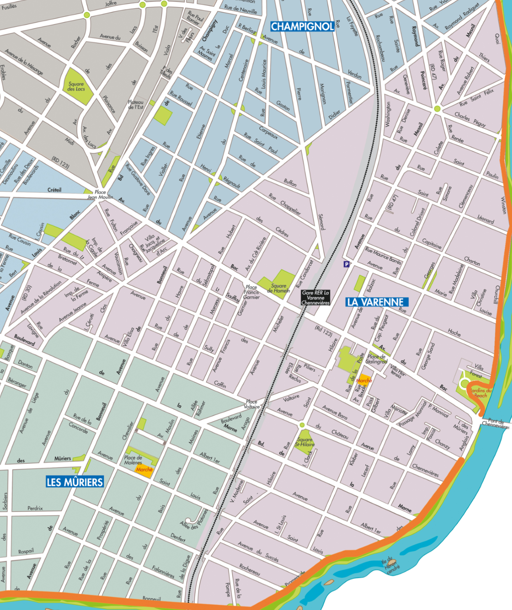

Le quartier de La Varenne



Le quartier du Parc Saint-Maur

Découvrez le quartier du parc Saint-Maur
Découvrez les rues en l'honneur des héros de la Seconde Guerre mondialeLe quartier du Vieux Saint-Maur

Découvrez le quartier du Vieux Saint-Maur
Découvrez les rues en l'honneur des héros de la Seconde Guerre mondialeLe quartier de Champignol

Découvrez le quartier de Champignol
Découvrez les rues en l'honneur des héros de la Seconde Guerre mondialeLe quartier de Saint-Maur–Créteil

Découvrez le quartier de Saint-Maur Créteil
Découvrez les rues en l'honneur des héros de la Seconde Guerre mondialeLe quartier d’Adamville

Découvrez le quartier d’Adamville
Découvrez les rues en l'honneur des héros de la Seconde Guerre mondialeLe quartier de La Pie

Découvrez le quartier de La Pie
Découvrez les rues en l'honneur des héros de la Seconde Guerre mondialeLe quartier des Mûriers

Découvrez le quartier des Mûriers
Découvrez les rues en l'honneur des héros de la Seconde Guerre mondiale